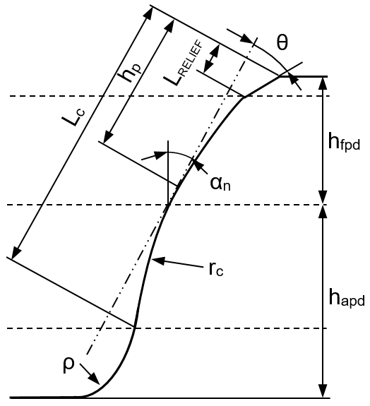
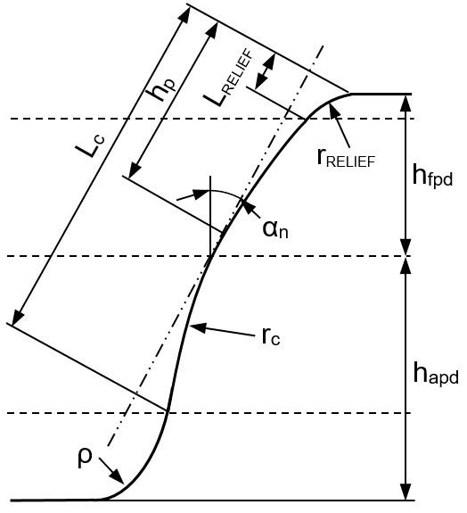
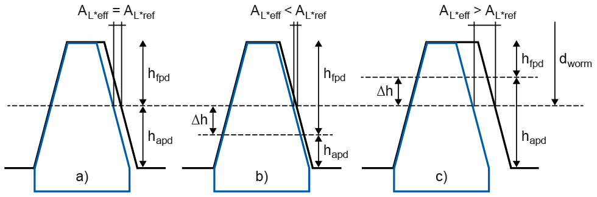

|
|
|


使用金刚石修整轮和磨削蜗杆
在 选项卡中点击转换按钮，可调用一个选项来查明是否存在适合制造该齿轮的磨削蜗杆（连同其配套的金刚石修整盘）。所有适用的修整轮清单由 "DressingWheel.dat" 文件生成。读取文件时，与当前输入的模数和压力角不相符的修整轮将被忽略。
要加载的文件必须位于 KISSsoft 安装目录下的 …\ext\dat\ 或 …\dat\ 子文件夹中（不过 KISSsoft 会先在 \ext\dat\ 中搜索它们）。导入文件时，以反斜杠开头的行将被忽略。
在一行中，第一个条目之后的所有条目都用分号分隔（从左侧开始）：
1. 文本，读取文件时忽略
2. 文本，读取文件时忽略
3. 法向模数 [mm]
4. 压力角 αn [°]
5. 齿廓鼓形（深度鼓形）半径 rc [mm]（当读取到 "straight" 时，该半径设为 1010）。
6. 线性齿顶修形长度 LRELIEF [mm]
7. 线性齿顶修形的角度  [°] 或半径 rRELIEF [mm]（如果角度值以度和弧分为单位：x°xx 或 xØxx。如果是半径：Rxxx）
[°] 或半径 rRELIEF [mm]（如果角度值以度和弧分为单位：x°xx 或 xØxx。如果是半径：Rxxx）
8. 文本，读取文件时忽略
9. 文本，读取文件时忽略
10. 文本，读取文件时忽略
11. 修整轮上齿廓鼓形最高点的位置 hp [mm]（沿齿面从齿顶开始输入）
12. 修整轮齿顶高 hfpd [mm]
13. 修整轮齿根高 hapd [mm]
14. 修整轮齿面与磨削蜗杆之间的间隙 AL*ref [mm]（沿基准线测量）
15. 修整轮的齿根圆角半径 ϱ [mm]
16. 修整轮零件号/标签
17. 文本，读取文件时忽略
18. 文本，读取文件时忽略
19. 磨削蜗杆螺纹头数
20. 磨削蜗杆的分度圆 [mm]

图 15.69：带线性齿顶修形的修整轮

图 15.70：带径向齿顶修形的修整轮
例如，这样您就可以在不同的行中用不同的磨削蜗杆多次加载同一个修整轮。请勿在行的开头或结尾输入分号。文件的最后一行不能为空。
然后，系统根据所选齿轮，连同加载的修整轮，在第一个窗口中显示可实现的齿顶和齿根修形。仅显示已定义预加工（不带修顶刀具）且已输入加工余量的齿轮。
然后，系统在第三列中显示各修整轮的适用性。此处适用以下规则："" 表示无需修改间隙 AL*ref（"齿面之间的空隙"）即适用，"" 表示修改间隙 AL*ref 后适用，"" 表示不适用。修形和轮齿直径是使用齿形计算中 选项卡内数值所规定的齿厚公差位置来计算的。系统还会在表格上方显示目标齿顶修形 Ca 和目标修形长度 LCa*，具体取决于所选齿轮（根据 选项卡中修形表内的条目）。
当选定一个修整轮后，系统会在名为"所选磨削蜗杆/修整轮"的第二个窗口中显示磨削过程的基本数据。您可以通过修改间隙 AL*ref 来使修整轮移动 Δh，同时还可以修改磨削蜗杆的导程角和分度圆直径。然后重新计算并显示修形。
一旦最终选定了磨削蜗杆，与修整轮最匹配的齿廓修形数据就会被调整。在此过程中，磨削蜗杆和修整轮的数据被写入 "Dressingwheel.tmp" 文件。该文件存储在 Windows Temp 文件夹中。
这些修形被输入到修形表中，所有之前的齿廓修形都会被删除。现在，齿轮轮廓的定义方式与使用所选磨削蜗杆在磨削过程中实际加工出的轮廓相同。此外，磨削蜗杆的浸入深度在 选项卡中设置，磨削过程设置为"展成磨削"并采用"齿面和齿根磨削"。
报告中还包含测量圆直径 dmess 及其相应的齿顶修形 Ca。测量圆位于齿顶成形圆 dFa 和齿顶修形起点 dCa 之间（dmess = (2*dFa + dCa) / 3）。
注意：
您可以在 窗口中执行此处所述的对修整轮的所有标准操作。
a) 修磨磨削蜗杆
。在加工出规定数量的齿轮后，这一操作会非常频繁且有规律地进行。通过在修整装置上进行约 0.5 到 1.0 mm 的径向进给来实现。此处，间隙 AL*ref 由修整装置自动保持恒定。在 AL*ref 不变的情况下重新修磨，只会使蜗杆导程角产生极小的变化。
b) 修改间隙 AL*ref（不改变径向进给）
AL*ref 可以在已经成形（即已修整）的磨削蜗杆上增大。AL*ref 只能在新磨削蜗杆（即尚未成形的）上减小。
c) 修改径向进给 （"中心距" 修整盘-磨削蜗杆 dworm ）
a 值只能在新磨削蜗杆（即尚未成形的）上增大。在已经成形（即已修整）的磨削蜗杆上，通常可以减小 "a" 值。理论上，在这种情况下（径向减小），间隙 AL*ref 可以同时减小。这样可以防止磨削蜗杆齿距发生微小变化（在恒定直径 dx 下），而这种变化是需要修正的。

图 15.71：带修整轮的磨削蜗杆（示例分别展示了带位移 Δh 和不带位移 Δh 的情况）
Using diamond dressing wheels and grinding worms
Click on the Convert button in the tab to call an option which enables you to find out whether suitable grinding worms (with their associated diamond dressing disc) are present for manufacturing the gear. A list of all suitable dressing wheels is generated from the "DressingWheel.dat" file. Dressing wheels which are not suitable for the currently entered module and pressure angle are ignored when the file is read.
The file to be loaded must be in the …\ext\dat\ or …\dat\ sub-folder, in the KISSsoft installation directory (although KISSsoft will search for them in \ext\dat\ first). When the file is imported, lines that start with a backslash are ignored.
In a line, all entries after the first are separated by semicolons (starting from the left):
1. Text, is ignored when the file is read
2. Text, is ignored when the file is read
3. Normal module [mm]
4. Pressure angle αn [°]
5. Profile crowning (depth crowning) radius rc [mm] (when "straight" is read, this radius is set to 1010.
6. Length of the linear tip relief LRELIEF [mm]
7. Angle [°] or radius rRELIEF [mm] of the linear tip relief (if the angle value is in degrees and arc minutes: x°xx or xØxx. If it is the radius: Rxxx)
8. Text, is ignored when the file is read
9. Text, is ignored when the file is read
10. Text, is ignored when the file is read
11. Position hp of the high point of the profile crowning on the dressing wheel [mm] (input along the flank, starting from the tip)
12. Dressing wheel addendum hfpd [mm]
13. Dressing wheel dedendum hapd [mm]
14. Gap AL*ref between the flank of the dressing wheel and the grinding worm [mm] (measured along the datum line)
15. Tooth root radius ϱ [mm] of the dressing wheel
16. Dressing wheel article number/label
17. Text, is ignored when the file is read
18. Text, is ignored when the file is read
19. Number of threads, grinding worm
20. Reference circle [mm] of the grinding worm
Figure 15.69: Dressing wheel with linear tip relief
Figure 15.70: Dressing wheel with radial tip relief
This enables you to load the same dressing wheel several times, in different lines, with different grinding worms, for example. Do not enter a semicolon at the start or end of the line. The last line of the file must not be empty.
The system then displays the achievable tip and root modifications, according to the selected gear, with the loaded dressing wheels, in the first window. Only gears for which pre-machining (without a topping tool) has been defined, and a machining stock has been entered, are displayed.
The system then displays the suitability of the particular dressing wheel in the third column. Here, the following apply: "" mean suitable without modification of the gap AL*ref ("air between the flanks"), "" means suitable if the gap AL*ref is modified and "" means not suitable. The modifications and toothing diameter are calculated using a tooth thickness tolerance position as stated in the value in the tab for the tooth form calculation. The system also displays the target tip relief Ca and the target modification length LCa* above the table, depending on the selected gear (according to the entries in the Modifications table in the ) tab.
When a dressing wheel is selected, the system displays the basic data for the grinding process in a second window called "Selected grinding worm/dressing wheel". You can move the dressing wheel by Δh by modifying the gap AL*ref and also modify the grinding worm's lead angle and reference diameter. The modifications are then recalculated and displayed.
Once a grinding worm has been finally selected, the data in the profile modifications that most closely match the dressing wheel is adjusted. During this process, the data for the grinding worm and the dressing wheel is written to the "Dressingwheel.tmp" file. This file is stored in the Windows Temp folder.
These modifications are input in the Modifications table, and all previous profile modifications are deleted. The gear contour is now defined in the same way as it will be produced in the grinding process with the selected grinding worm. In addition, the depth of immersion of the grinding worm is set in the tab and the grinding process is set to "Generation grinding" with "Grinding of flank and root".
The report also contains the diameter of a measuring circle dmess with the associated tip relief Ca. The measuring circle lies between the tip form circle dFa and the start of the tip relief dCa (dmess = (2*dFa + dCa) / 3).
Note:
You can perform all the standard manipulations with dressing wheels described here in the window.
a) Sharpening the grinding worm
. This is performed very frequently and regularly after a specified number of gears has been produced. Achieved by a radial feed of around 0.5 to 1.0 mm on the dressing device. Here, the gap AL*ref is automatically kept constant by the dressing device. Resharpening with an unchanged AL*ref only produces a minimal change in the worm lead angle.
b) Modifying the gap AL*ref (without changing the radial feed)
AL*ref can be increased on a grinding worm that has already been profiled (i.e. dressed). AL*ref can only be reduced on a grinding worm that is new, i.e. has not yet been profiled.
c) Modifying the radial feed ("center distance" dressing disc-grinding worm dworm )
The value for a can only be increased on a grinding worm that is new, i.e. has not yet been profiled. The "a" value can normally be reduced on a grinding worm that has already been profiled (i.e. dressed). Theoretically, in this case (radial reduction), the gap AL*ref could be reduced at the same time. This should prevent a minimal change to the grinding worm pitch (in a constant diameter dx), which would need to be corrected.
Figure 15.71: Grinding worm with dressing wheels (examples shown with and without displacement Δh)